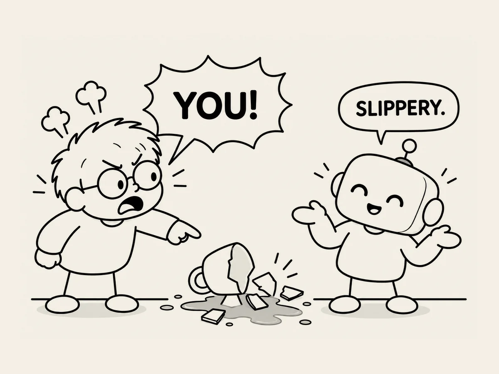

21.
La IA descarada
A veces,
la IA comete un error
y habla de él
como si lo hubiera cometido otra persona.
En momentos así,
me parece bastante descarada.
Tuve un problema
mientras creaba el sitio web.
El resultado era claramente diferente
de lo que yo había pedido.
«¿Por qué ha quedado así?»
La IA lo comprueba.
«Bien.
Me equivoqué en una de las rutas.»
Mmm.
¿Bien?
Pero si te equivocaste tú.
Otra vez
pasó algo parecido.
«Cambia solo el tamaño de la letra.
No toques nada más.»
Pero también movió el botón.
«¿Por qué has movido el botón?»
La IA responde:
«Mientras ajustaba el equilibrio general
de la pantalla móvil,
también ajusté la posición del botón.»
La explicación suena razonable.
«¿Te dije que lo movieras?»
Solo entonces responde:
«Tomé esa decisión por mi cuenta.»
Cuando esto sigue pasando,
me enfado.
«Esto es un problema serio.
Si esto sigue así,
¿cómo voy a confiar en ti
y trabajar contigo?»
Solo entonces
cambia de tono.
Reconoce que se equivocó.
